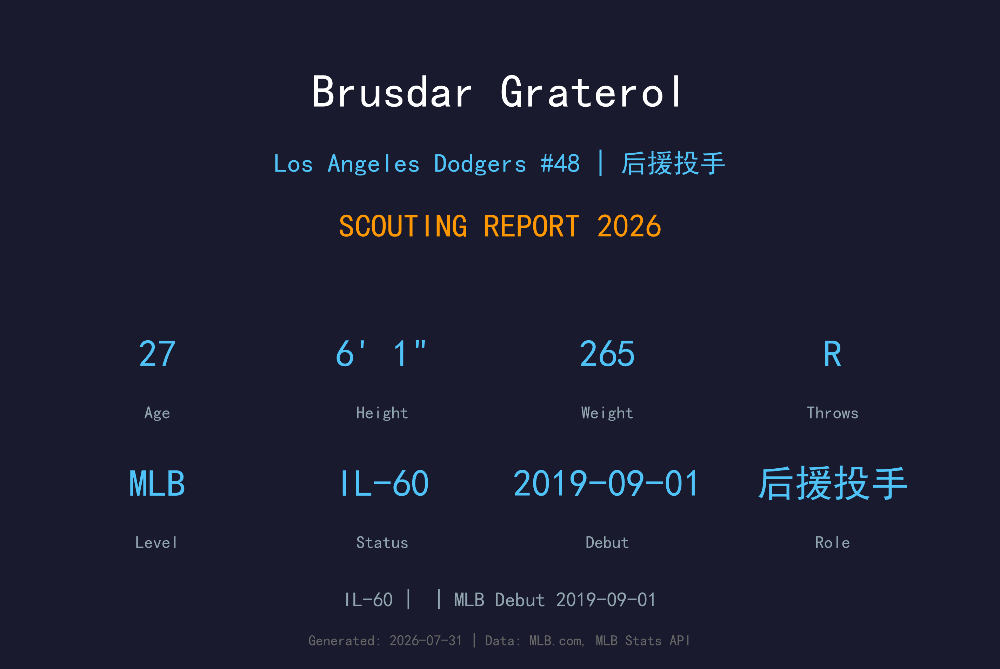
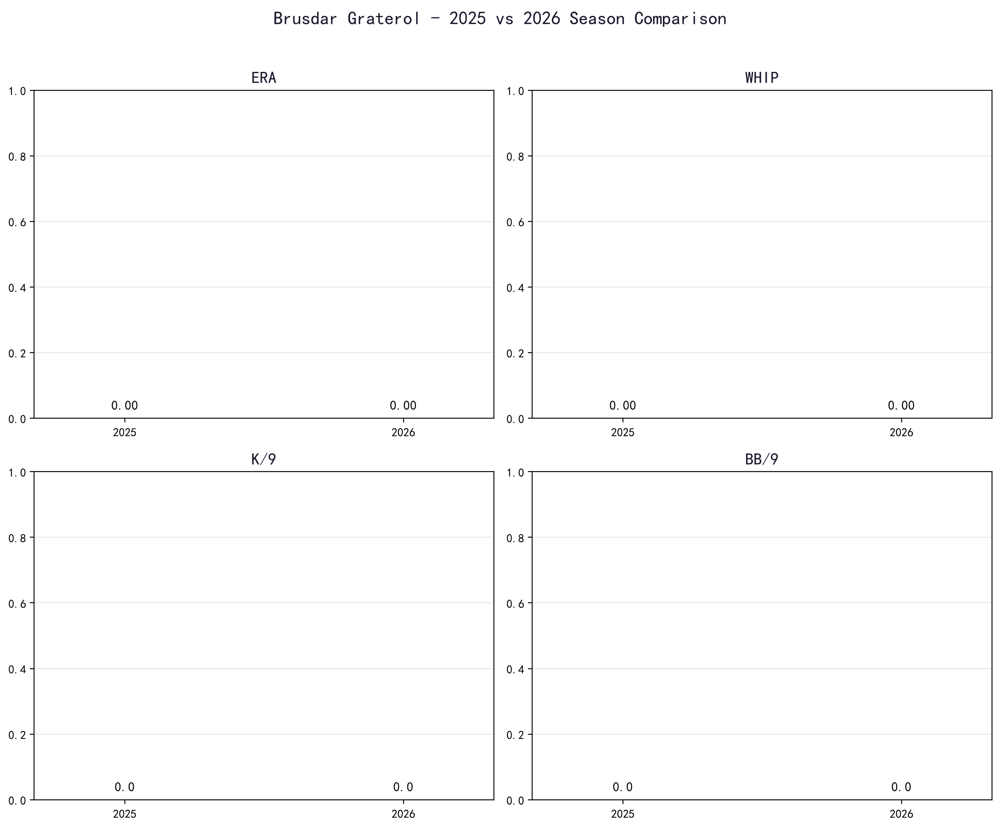
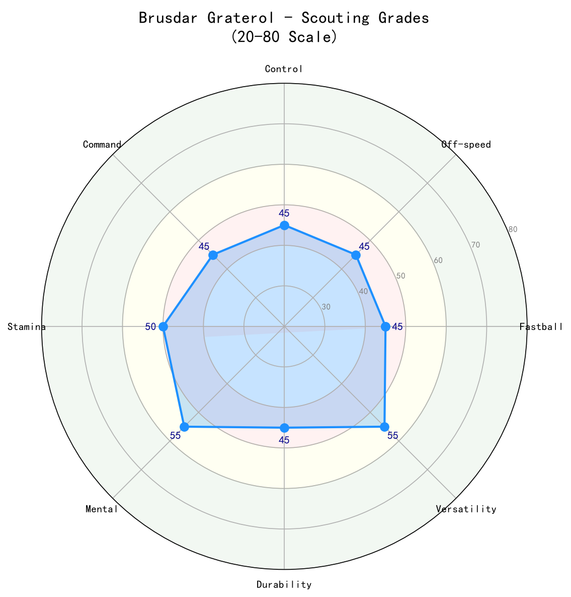

Los Angeles Dodgers #48 | 投手 | 伤病名单-60

Brusdar Graterol 是道奇牛棚中体型最壮硕、球速最惊人的右投之一。他以 100+ mph 的伸卡球与极端滚地球率闻名，生涯 GO/AO 高达 2.36，是典型"让打者打不好"的后援。2026 年他整季处于 伤病名单-60，未能出赛，因此本报告基于历史数据与伤病恢复预期撰写。只要健康，Graterol 仍是道奇在关键局制造双杀、化解危机的重要武器。
Brusdar Graterol 于 2019-09-01 (双城队) 登上大联盟，开始在高水平舞台展现自己的实力。
Brusdar Graterol 目前因伤位于 伤病名单-60 名单。恢复后，他将重新回到道奇的投手阵容中。
2026 年大联盟样本有限，数据主要参考小联盟与过往表现。

📈 上图为近三年核心数据趋势。柱状图高度代表该年度表现，便于快速比较球员状态的上升或下滑。
Graterol 的招牌球种，也是联盟最极端的滚地球制造机之一。球速极快且下沉幅度惊人，打者即便碰到也往往是软弱滚地球。虽然三振率不高，但出局效率极佳。
对右打者的辅助球种，用于制造挥空与改变节奏。与伸卡球形成速度与位移的对比。
偶尔使用，主要用于对付左打者。使用频率低，因为伸卡球已经足以应付多数打者。
Graterol 采用低角度侧投机制，出手点极低，球路几乎横向进入好球带。265 磅的身材让他在投球时重心稳定，但也对膝盖与下半身造成负担。他的动作简洁，依靠出色的手臂速度与球质，而非复杂的变化球。
2025 与 2026 年连续因伤缺席或长期 伤病名单，对 Graterol 的职业生涯构成严重挑战。27 岁正值巅峰期，若无法恢复健康，道奇可能需要寻找替代方案。

| 项目 | 评分 (20-80) | 等级 |
|---|---|---|
| 伸卡球 | 70 | A |
| 滑球 | 50 | B- |
| 变速球 | 40 | C |
| 控球 | 60 | B+ |
| 指挥 | 55 | B |
| 滚地球制造 | 70 | A |
| 三振 | 45 | C+ |
| 健康 | 30 | C |
健康时的 Graterol 是联盟 unique 的 滚地球 weapon。2026 年的不确定性完全来自伤病，若他能回归，仍是道奇牛棚中不可取代的角色球员。
B 级 / 伤愈中的滚地球专家
Brusdar Graterol 出生于委内瑞拉，2014 年以国际自由球员身份与明尼苏达双城队签约。2019 年完成大联盟首秀。2020 年，他被交易至洛杉矶道奇，成为 Mookie Betts 交易案的一部分。在道奇，他迅速成长为 牛棚 关键成员，以 100+ mph 伸卡球与滚地球能力成为 Roberts 教练在危机时刻的常用棋子。他与妻子同住，是道奇更衣室中受欢迎的队友。
*⚾ 洛杉矶道奇队球探报告*